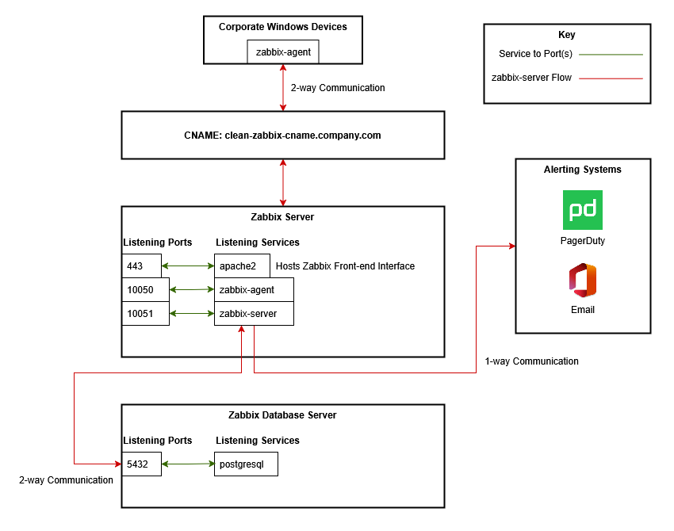

Overview
The client I was working with required infrastructure monitoring for specific devices in their network.
These were Windows systems. The client preferred we use Zabbix due to team familiarity with the product.
Architecture Diagram(s)
Architecture Explanation
Corporate Windows Devices
zabbix-agent
- These devices were configured to use the zabbix-agent to allow for industry-standardized monitoring with a Zabbix Server.
- This was implemented across all Windows devices using Group Policy.
CNAME
The CNAME has a single purpose for this environment:
- Facilitating a clean and easy to remember name for the Zabbix Server across the network (for web access, ticketing, etc).
Zabbix Server
apache2 (Service)
- apache2 runs as a service on the Zabbix Server. It front-ends the zabbix-server service allowing web access.
- apache2 listens on port 443.
zabbix-agent (Service)
- The zabbix-agent service is running and listens on port 10050
- This service collects and provides detailed system metrics to the Zabbix Server.
zabbix-server (Service)
- The zabbix-server service is running and listens on port 10051
- This service connects to devices on the network running the zabbix-agent service and retrieves monitoring information from them.
- This service integrates with email, PagerDuty, and other systems to notify teams of "downed" devices.
Zabbix Database Server
postgresql (service)
- The postgresql service is running on the database service and listens on port 5432
- The client's database configuration(s) didn't need a lot of custom setup. They already had a thoroughly developed Puppet architecture for PostgreSQL.
Automation and Code
Overview
My client required Zabbix installations that were repeatable. I chose to do this with Puppet in their environment.
I wrote a wrapper around the following Puppet Forge Module: Vop Pupuli zabbix module
I specifically architected it around this configuration: Multi node Zabbix Server setup
The authors detail various methods on this page for installing Zabbix. I chose the 2-server configuration with PostgreSQL as the database backend.
Zabbix Database Server
The client's database configuration(s) didn't need a lot of custom setup. They already had a thoroughly developed Puppet architecture for PostgreSQL.
The only need was to engage the database team and provide project requirements.
Zabbix Application Server
Note(s)
- At this client, the team cloned copies of modules from upstream vendors and then referenced these modules in their Puppetfile.
- Doing this allowed them to build additional features onto vendor modules and also "wrap" them. It was a useful, though sometimes imperfect feature.
- To keep this code anonymous, I'll obfuscate filenames.
Agent Components
name_of_zabbix_wrapper_module::server_filename::agent_hostname
- Defines the agent server hostname, used for the Zabbix agent. By String
name_of_zabbix_wrapper_module::server::agent_server
- Defines the Zabbix server to use for the agent. By String
Server Components
Server Components
name_of_zabbix_wrapper_module::server_filename::cachesize
- Defines the the size of the configuration cache, in bytes. By String.
name_of_zabbix_wrapper_module::server_filename::database_server
- Defines the Zabbix database server. By FQDN.
name_of_zabbix_wrapper_module::server_filename::database_name
- Defines the Zabbix database name. By String.
name_of_zabbix_wrapper_module::server_filename::database_user
- Defines the Zabbix database user. By String.
name_of_zabbix_wrapper_module::server_filename::database_password
- Defines the Zabbix database password. By String.
name_of_zabbix_wrapper_module::server_filename::database_type
- Defines the Zabbix database server type. Valid options are mysql and postgresql.
name_of_zabbix_wrapper_module::server_filename::maxhousekeeperdelete
- Defines the max amount of rows 'housekeeper' task may delete.
name_of_zabbix_wrapper_module::server_filename::startpingers
- Number of pre-forked instances of icmp pingers.
name_of_zabbix_wrapper_module::server_filename::startdiscoverers
- Number of pre-forked instances of discoverers.
name_of_zabbix_wrapper_module::server_filename::snmptrapperfile
- Defines the location of the snmp trap file.
name_of_zabbix_wrapper_module::server_filename::startsnmptrapper
- Defines whether or not to start the snmptrapper. 0=no, 1=yes.
name_of_zabbix_wrapper_module::server_filename::trendcachesize
- Size of trend cache, in bytes
Web Components
name_of_zabbix_wrapper_module::server_filename::apache_php_max_execution_time
- Defines the Apache PHP max execution time. By Integer.
name_of_zabbix_wrapper_module::server_filename::apache_php_max_input_time
- Defines the Apache PHP max input time. By Integer.
name_of_zabbix_wrapper_module::server_filename::apache_php_post_max_size
- Defines the Apache PHP post maximum size. By String.
name_of_zabbix_wrapper_module::server_filename::cname
- Defines the CNAME used to access the Zabbix web interface. By FQDN.
name_of_zabbix_wrapper_module::server_filename::app_server
- Defines the Zabbix application server. By FQDN.
name_of_zabbix_wrapper_module::server_filename::database_server
- Defines the Zabbix database server. By FQDN.
name_of_zabbix_wrapper_module::server_filename::database_name
- Defines the Zabbix database name. By String.
name_of_zabbix_wrapper_module::server_filename::database_user
- Defines the Zabbix database user. By String.
name_of_zabbix_wrapper_module::server_filename::database_password
- Defines the Zabbix database password. By String.
name_of_zabbix_wrapper_module::server_filename::zabbix_web_title
- Defines the Web UI title of the Zabbix server. By String.
SNMP trap Components
name_of_zabbix_wrapper_module::snmp_traps_filename::snmp_community
- Defines the SNMP community that should be used by this server.
name_of_zabbix_wrapper_module::receive_snmp_traps
- Defines whether or not a Zabbix Server should receive SNMP traps. Options are true or false.
name_of_zabbix_wrapper_module::snmp_traps_filename::snmp_perl_script
- Defines the full path for the snmp perl script.
name_of_zabbix_wrapper_module::snmp_traps_filename::snmp_perl_script_owner
- Defines the user with ownership of the snmp_perl_script file.
name_of_zabbix_wrapper_module::snmp_traps_filename::snmp_perl_script_group
- Defines the group with ownership of the snmp_perl_script file.
name_of_zabbix_wrapper_module::snmp_traps_filename::snmp_perl_script_mode
- Defines the access mode of the snmp_perl_script file.
name_of_zabbix_wrapper_module::snmp_traps_filename::snmptrapperfile
- Defines the full path for the snmptrapperfile.
- This is the temporary file that receives SNMP traps on the Zabbix server.
name_of_zabbix_wrapper_module::snmp_traps_filename::snmptrapperfile_owner
- Defines the user with ownership of the snmptrapperfile.
name_of_zabbix_wrapper_module::snmp_traps_filename::snmptrapperfile_group
- Defines the group with ownership of the snmptrapperfile.
name_of_zabbix_wrapper_module::snmp_traps_filename::snmptrapperfile_mode
- Defines the access mode of the snmptrapperfile.
name_of_zabbix_wrapper_module::snmp_traps_filename::snmptrapd_conf_file
- Defines the full path for the snmptrapd configuration file.
- This is at /etc/snmp/snmptrapd.conf by default.
name_of_zabbix_wrapper_module::snmp_traps_filename::snmptrapd_owner
- Defines the user with ownership of the snmptrapd configuration file.
name_of_zabbix_wrapper_module::snmp_traps_filename::snmptrapd_group
- Defines the group with ownership of the snmptrapd configuration file.
name_of_zabbix_wrapper_module::snmp_traps_filename::snmptrapd_mode
- Defines the access mode of the snmptrapd configuration file.
Monitoring
This was a Zabbix environment where I provisioned the infrastructure and then handed the system off to my client.
All client monitoring setup(s), dashboards, and post-design setup processes were handled by their in-house staff.
Logs
Zabbix Agent Logs - Linux
- Zabbix Agent logs on Linux VMs are at the following location: /var/log/syslog
Zabbix Server Logs
- Zabbix Server logs on Linux VMs are at the following location: /var/log/syslog